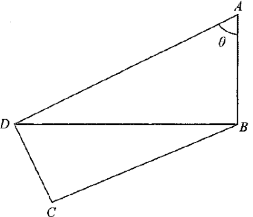

In the figure, \(\angle ABD=\angle ADC=\angle BCD=90^\circ\). If \(AB=\ell\), then \(CD=\)

The key is breaking the figure into two right triangles: \(\triangle ABD\) and \(\triangle BCD\). Drag the slider to change \(\theta\) and watch how the lengths change. Toggle the layers to highlight each triangle.
Focus on the right-angled triangle \(\triangle ABD\) with the right angle at \(B\):
\[ \angle ABD = 90^\circ,\qquad \angle BAD=\theta \]Apply the tangent ratio in \(\triangle ABD\):
\[ \tan\theta=\frac{BD}{AB}=\frac{BD}{\ell}\quad\Longrightarrow\quad BD=\ell\tan\theta \]Now find \(\angle ADB\) and then \(\angle BDC\). The diagram below shows the angles; the arcs update live as you move the slider.
Use the angle sum of \(\triangle ABD\):
\[ \angle ADB = 180^\circ - \angle ABD - \angle BAD = 180^\circ - 90^\circ - \theta = 90^\circ - \theta \]Since \(\angle ADC=90^\circ\) and \(\angle ADB\) forms part of it:
\[ \angle BDC = \angle ADC - \angle ADB = 90^\circ - (90^\circ - \theta) = \theta \]In \(\triangle BCD\), the right angle is at \(C\). Slide \(\theta\) and watch \(CD\) change.
In the right-angled triangle \(\triangle BCD\), the right angle is at \(C\), and \(\angle BDC=\theta\). Using the cosine ratio:
\[ \cos\angle BDC=\frac{CD}{BD}\quad\Longrightarrow\quad CD=BD\cos\angle BDC \]Substitute \(BD=\ell\tan\theta\) and \(\angle BDC=\theta\):
\[ CD=(\ell\tan\theta)\cos\theta=\ell\cdot\frac{\sin\theta}{\cos\theta}\cdot\cos\theta=\ell\sin\theta \]